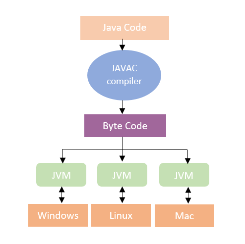

Software Engineering
Code Repository
Ein Code Repository spielt eine große Rolle innerhalb der Versionsverwaltung, mit welcher in der modernen Entwicklung meist gearbeitet wird. Das Code Repository verwaltet alle Änderungen die an einem Code unternommen werden. Er ist sozusagen ein Aufbewahrungsort und enthält immer auch die aktuellste Version. Das Code Repository ermöglicht es außerdem mit Kollegen gemeinsam an einem Code zu arbeiten. Um dies umsetzen zu können gibt es verschiedene Code hosting Platformen, wie z.B. GitHub, GitLab, Bitbucket oder SourceForge.
Zum Arbeiten mit GitHub wird immer auf die neuste Version des Codes zugegriffen und eine Arbeitskopie von diesem erstellt. Nachdem der Mitarbeiter seine geklonte Version des Codes bearbeitet hat kann er ihn durch den Befehl add in die stage hochladen und anschließend comitten. Jetzt befindet sich der Code in einem lokalen Repository und kann durch den push Befehl in ein anderes Repository übertragen werden. Da meist Mehrere gleichzeitig an einem Code arbeiten ist es besser seine eigene branch zu erstellen an der man dann denn Code bearbeitet, danach eröffnet man einen Pull-Request statt direkt zu pushen. Dadurch können Kollegen Verbesserungen oder Änderungen vorschlagen, was die Zusammenarbeit zwischen mehreren Leuten erleichtert und darüberhinaus den Projektfortschritt nachvollziehbarer macht. Wenn man mit dem Code zufrieden ist, kann er von einem Kollegen in die eigentliche Branch gemerged werden. Nun befindet sich das Repository wieder auf dem aktuellsten Stand und Andere können die Neuerungen durch den pull Befehl auf ihre geklonte Version übertragen.

Java Grundlagen
Java ist eine vergleichsweise einfache Programmiersprache, die auf komplexe und fehleranfällige Sprachkonstrukte verzichtet, dies trägt auch zur höheren Stabilität von Programmen bei. Ein wesentlicher Vorteil von Java ist, dass ein in Java geschriebenes Programm unter jedem Betriebssystem läuft. Der Java Quellcode wird in Bytecode umgewandelt, welcher Betriebssystemunabhängig ist. Er muss dann nur noch von der zum Betriebsystem passenden JVM (Java Virtual Machine) interpretiert werden
In Java ist es vorgesehen, dass objektorientiert programmiert wird, daher wird auch immer in Klassen programmiert. Aber erst eine main() Methode macht aus einer Klasse dann ein ausführbares Programm, man spricht dabei von einer Startklasse.
Web Entwicklung
Unter Webentwicklung versteht man im Allgemeinen das Erstellen von Websites und webbasierten Applikationen, aber auch Softwaren oder mobile Applikationen können dazugehören. Abgesehen von dem äußeren Erscheinungsbild einer Website, gibt es allerdings auch noch andere Bereiche in der ein Webentwickler tätig wird. Der Verantwortungsbereich lässt sich dabei in Frontend- und Backend-Entwicklung unterteilen
Frontend-Entwicklung
Aufgabe des Frontendentwicklers ist es sich um das Layout einer Seite zu kümmern und auch um die clientseitige Programmierung, darunter versteht man das was vom Kunden gesehen wird. Zur Umsetzung wird die Beschreibungssprache HTML, die Stylesheet-Sprache CSS und die Programmiersprache JavaScript verwendet. Eine große Hilfe in diesem Bereich ist das Framework Angular, es ermöglicht eine bessere Konsistenz, Produktivität, Wartbarkeit, Modularität sowie eine frühzeitige Fehlererkennung.
Backend-Entwicklung
Zum Aufgabenbereich eines Backendentwicklers gehört die Entwicklung und Sicherung eines IT-Systems im Backend, er kümmert sich um die Programmierung des Servers der Website. Das Backend bezeichnet die Datenverarbeitung, welche im Vergleich zum Frontend nicht für den Nutzer sichtbar ist. Backendentwickler sind außerdem für die regelmäßige Wartung und Pflege von Datenbanken und Server zuständig. Eine wichtige Rolle im Backend spielen sogesagte APIs (Application programming interfaces), dabei handelt es sich um Programmierschnittstellen. APIs können ohne grafische Oberfläche direkt mit dem Backend kommunizieren. Somit ist es möglich statt einer Website-Abfrage auch eine API-Abfrage zu machen, der Unterschied dabei ist, dass die API nur mit rohen Daten auf die Abfrage antwortet.